HOL burning records (1/17/2024)
Power off before inserting the line!(The following plug -in line operations need to be performed after power off)
Software package download preparation part:
Download firmware package
exist W3 2024/01/10 SW Integration Release Note（Develop_Chery） - wave 3 development - Docupedia (bosch.com) Upload the installation package (usually the latest date, depending on the requirements, the specific version also depends on the requirements).
SOC firmware package:
|
Download and decompress |
|
|
Download command |
wget --user=yhp1szh --password=][poiuytrewqY1 https://rb-cmbinex-sghk-p1.apac.bosch.com/artifactory/wave3/CCPLEX/WAVE3-CCPLEX-develop_6.0.7_R2306-202401110041CST/variant/WAVE3-CCPLEX-develop_6.0.7_R2306-202401110041CST-Slave-SafetyDbg-B0-GETK.tar.gz (URL to be replaced with the corresponding package URL) |
|
Download directory |
In the linux computer ~/SW directory (create a new folder storage, specifically naming the naming of other folders in the SW directory) |
|
Decompression command |
TAR-ZXVF WAVE3-CCCPLEX-Develop_6.0.7_r2304-202308310941cst-Wave3.3_p-standard_bo.tar.gz (if it is changed to the name of your own package) |
Download: Use MobaxTerm to connect to the Linux computer to download with a WGET command (wired IP: 10.178.237.177, wireless IP: 10.192.214.194, and use wired offline).
Decadee: Use du -H -Max -Depth = 1 command before decompression to view the remaining space of the current folder to avoid insufficient space.Master is changed to the folder after decompression (refer to how other folders are named), and then decompress the file of the SLAVE side.
MCU firmware package
MCU files download to your own computer.
Burning firmware package
SOC part:
Connect the burning board:
|
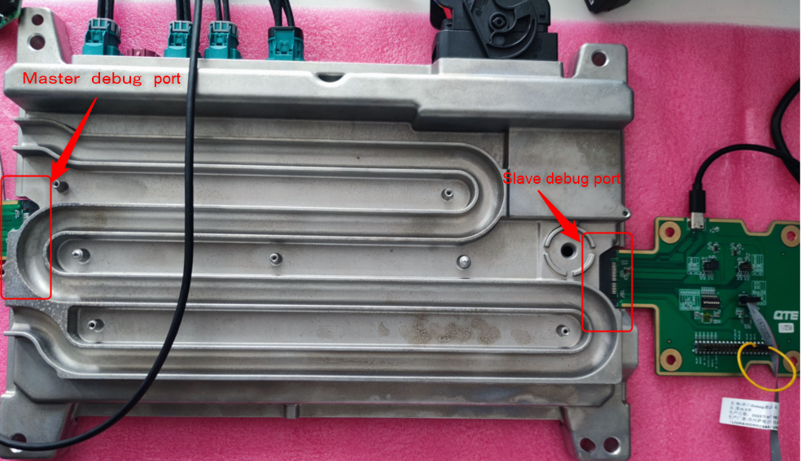 Figure 1: Curringboard connection diagram |
Connect the burning board (small, already dial the switch) to the Linux computer, and then connect to the MASTER end.Use MobaxTerm to connect to the Linux computer with your own computer.
Execute the command LSUSB to determine that the burning board has been connected (Figure 2).
|
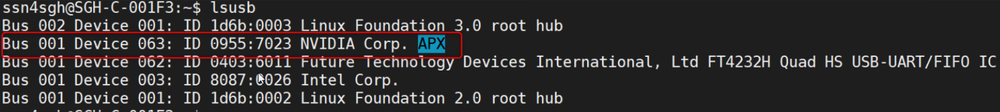 Figure 2: LSUSB is determined to be connected by the burning board |
Recording process
Open the Master terminal download and defompress in the SW.) Burning records.
|
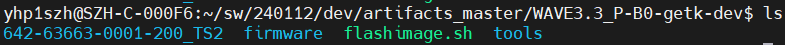 Figure 3: Burning record folder |
A similar Figure 4 indicates that the burning record is successful
|
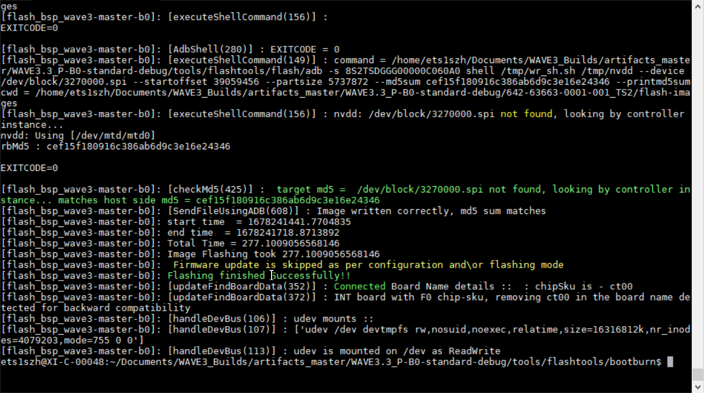 Figure 4: Successful chart |
The Slave side is the same as the Master side, but the name of the file name and command is different.
MCU part:
Connect

Plug the lines on the burning version to the MCU side (the most far away from the mouth of the board) and connect the board to your computer and master end;
Recording process
1. Open the IMTMEMTOOL.EXE Burning Program (when you open it for the first time, select the folder path where the file is located)
Reference connection: https://inside-docupedia.bosch.com/confluence/x/Ckvwpw
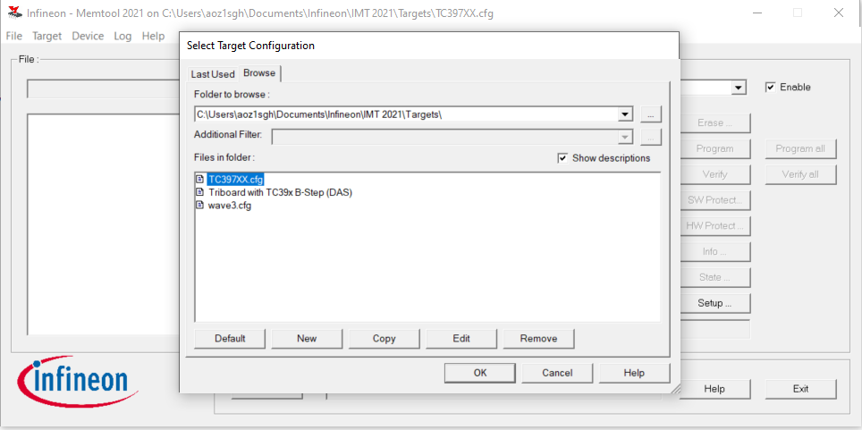
|
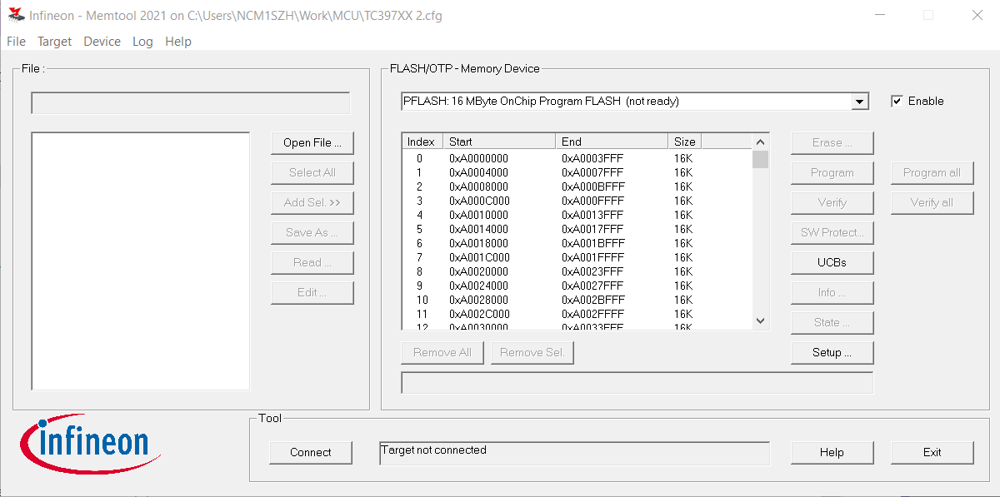 Figure 5: MUC burning software chart |
2. Click Open File
Choose a file of a good MCU with a good MCU (generally select this hex file like this)
|
Figure 6: MCU burning hex file |
3. Click Connect
4. Click Select all
5. Click Add Sel >>
6. Determine Flash/OTP-MEMIRY Device column like Figure 7, click Program All.
|
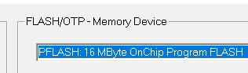 Figure 7: PFLASH area |
This operation reference MINIWIGGER brush MCU Guide -Wave 3 Development -DOCUPEDIA (bosch.com) Operation 4. If the burning is unsuccessful, the operation 1, 2, 3, and 4 will be performed again.
7.Slave is similar to the file name of the HEX file just selected.
After the recorded records:
Record burning version:
(Master IP of Hol2 and HOL3 fixed 10.43.0.28, SLAVE IP is fixed to 10.43.0.29) After the Master is connected to use the command cat /cache/firmware/buildinfo.txt
|
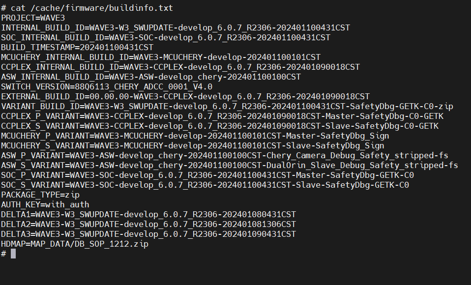 Figure 8: View burning version |
Read IP
Two offices need to read IP.
1. Use serial port debugging board to connect to large burning boards and your own computer.
2. Use MobaxTerm to connect the serial port (try all serial ports)
|
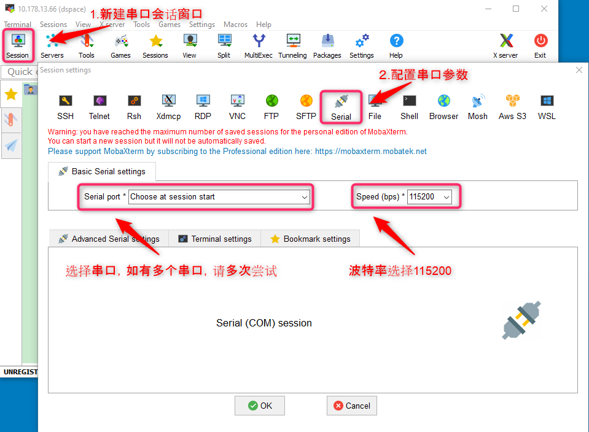 Figure 9: MOBAXTERM connection serial port |
3. Use ifconfig command to read the new IP address and take a screenshot of the group.
SLAVE Entering method:
After entering the master side, then use the command export Sock =/SOCK4 and SSH 10.43.0.29 commands to enter the Master terminal.
|
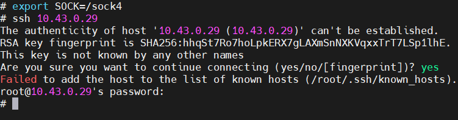 Figure 10: Enter the Master side command |
esme self -enabled
|
QNX View process information <针对 esme self -enabled 进程>： |
pidin ar | grep 'viper|liper' |
|
Turn off ESME: |
/asw/esme_switch.sh -f |
|
Restore ESME: |
Restore ESME: /asw/esme_switch.sh -r |
vm_test.txt file
|
Enter VM_test.txt Exist folder: |
CD /Persist \ LCM_TEST (if there is no LCM_Test folder, create one with mkdir) |
|
View vm_test.txt content |
cat vm_test.txt (if it is empty, if there is content, delete the vm_test.txt file with the RM command and then use ca> vm_test.txt to create a new one to ensure that there is no content) |
Get up
|
Master |
After updating the software, you need to turn off the Camera quickly through Doip: export SOCK=/sock4 /opt/app/diag/bin/DiagTester Close 1060 2761 2762 2EFD0E00 Read the GET UP Status 1060 22FD0E |
1060 is to start Diagtester, directly 1060 22FD0E If you get 00
|
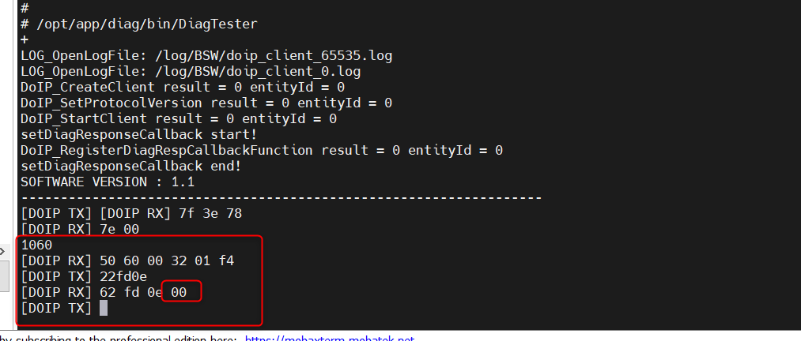 Figure 11: Get up state read |
E2E
|
E2E(master) |
Internal DOIP Tool (Master) cd /opt/app/diag/bin/ export SOCK=/sock4 ./DiagTester Set the E2E switch -finally send 1101 to restart and take effect 1060 2761 2762 2EFDDA0000 level/2efddaffFF opening 1101 Read the E2E switch status 1060 22fdda |
Similar to reading the GET UP state, enter 1060 and 22FDDA to get 00.
Related documents:
IP and connection methods of table frames: 20 HoL bench basic info - wave 3 development - Docupedia (bosch.com)
Frequently Asked Questions: Frequently Asked Questions CHCKLIST and Common Operations -Wave 3 Development -DOCUPEDIA (bosch.com)
Detailed MCU Guide: Miniwigger brush MCU guide
Detailed SOC Guide: [W3 BSP] C0 Sample SOC flashing Guide - wave 3 development - Docupedia (bosch.com)